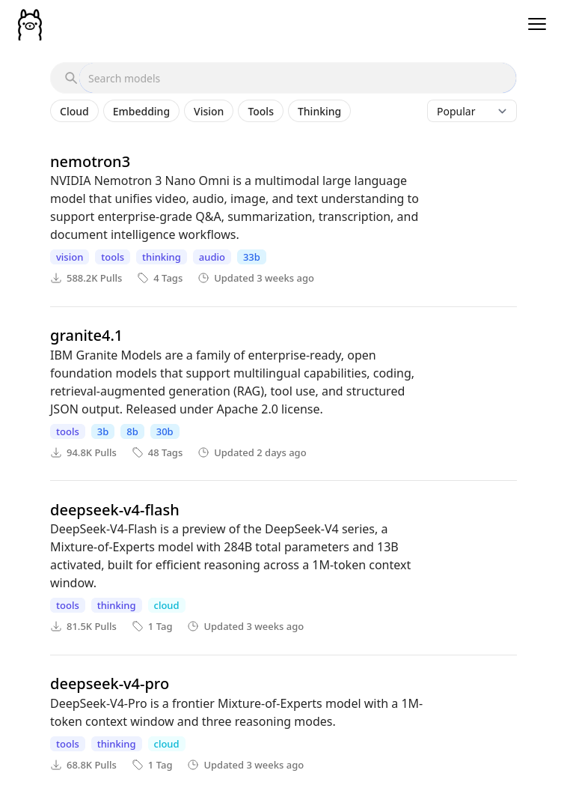
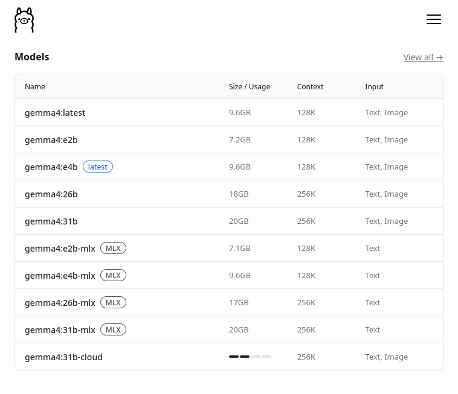
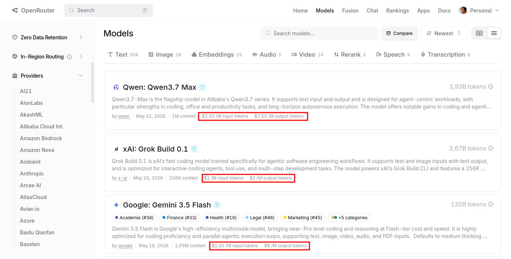
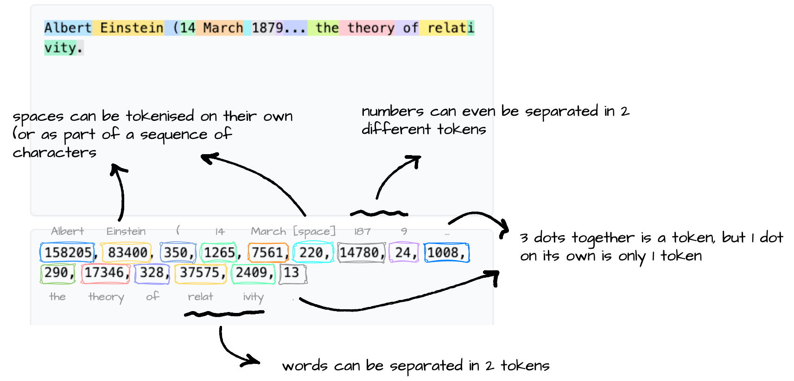
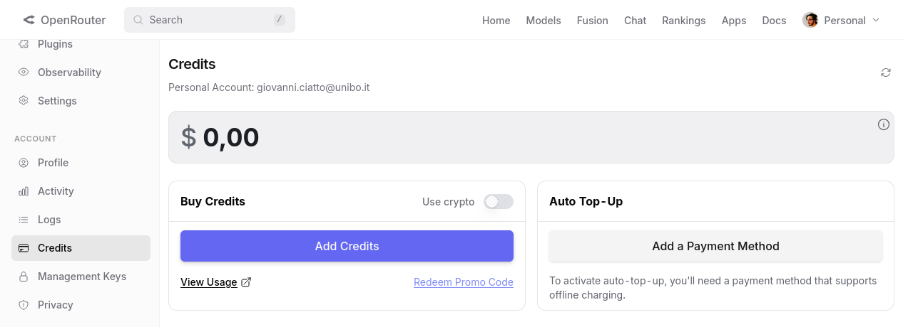
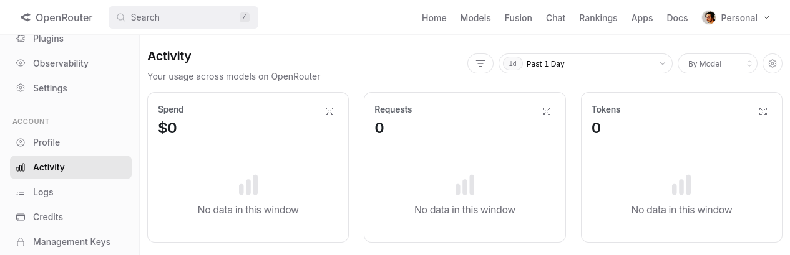
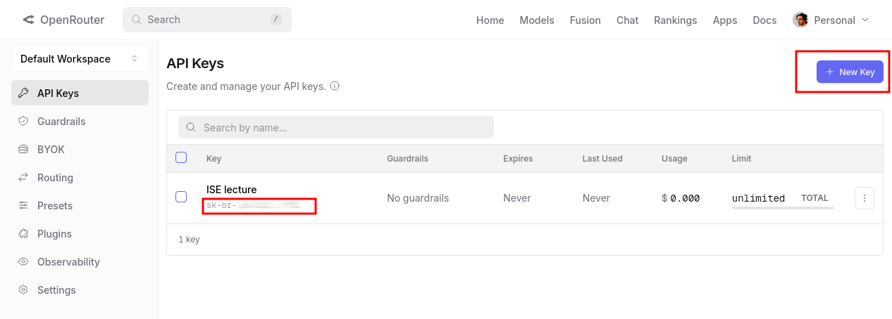
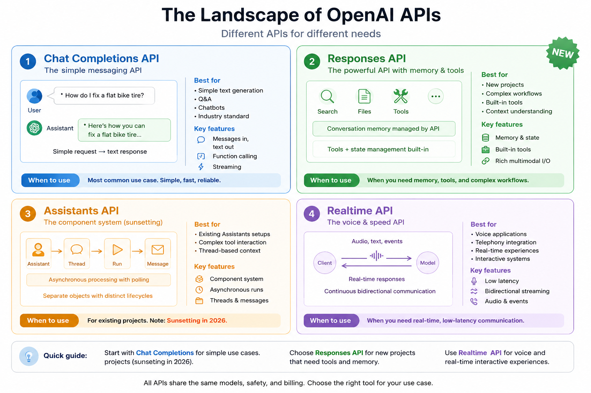
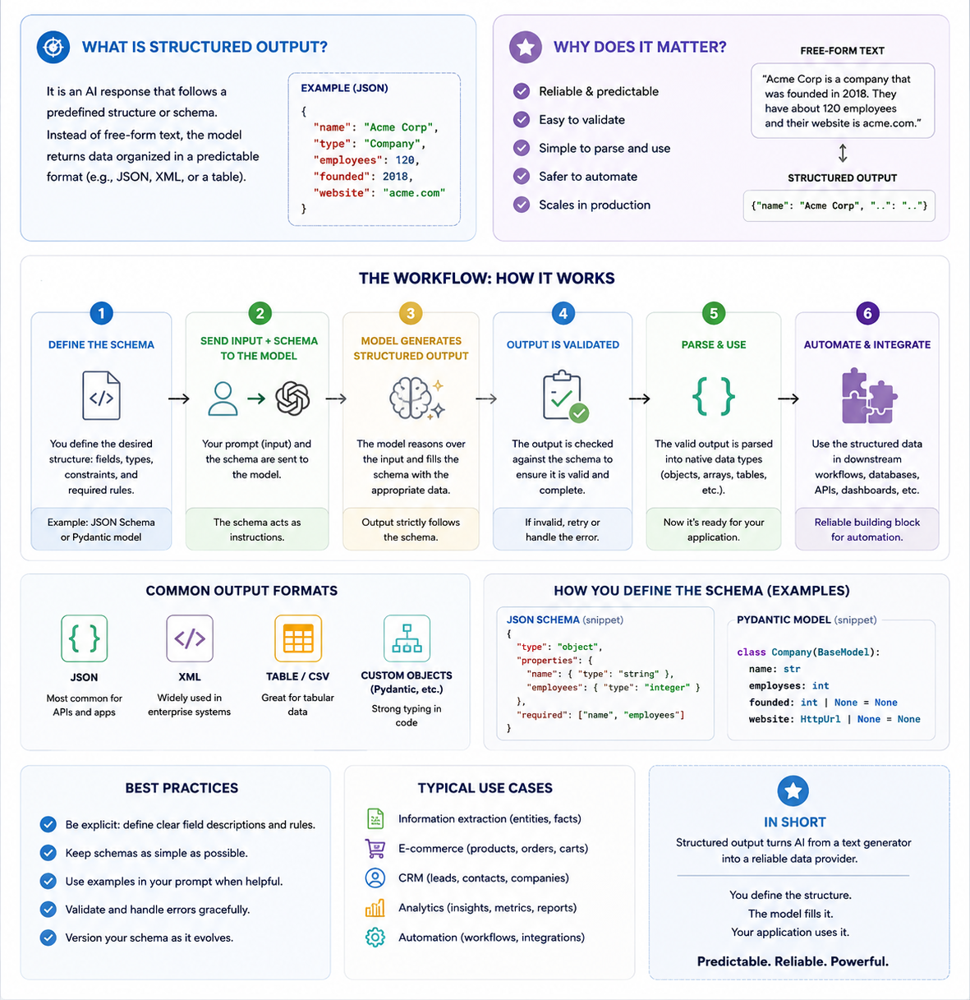
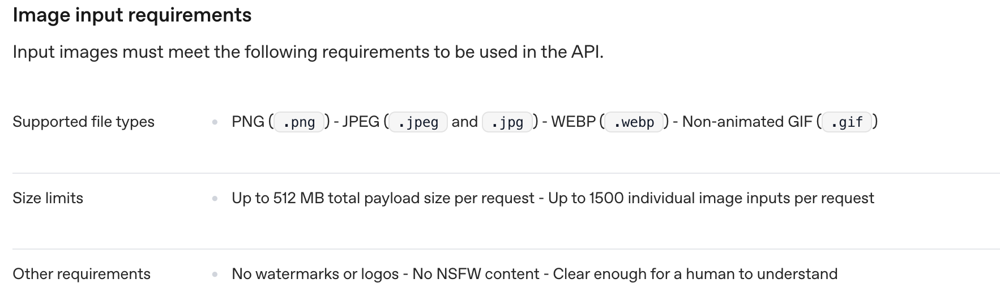

Compiled on: 2026-05-30 — printable version
On-premise vs. On-cloud deployment
Service Provider: several exist, with different offerings in terms of models, pricing, and features
Web API Compatibility: early providers (e.g. OpenAI, Google) invented their own APIs, similar in the spirit, but different in syntax
Client Libraries, in target programming languages wrap Web API clients and make it easier to use LLMs programmaticatically
Ollama is a company that provides a containerized solution for hosting and running LLMs on-premise, with a focus on ease of use and accessibility
It offers a model zoo with several pre-trained models available for download and use
Ollama’s solutions can be used on various hardware & OS configurations, including Nvidia GPUs and Apple Silicon as well as Linux, MacOS, and Windows
Ollama’s API supports both a native CLI conversational interface and a Web API for programmatic access, making it versatile for different use cases and user preferences
Ollama may also be used an on-cloud service, but here we will focus on the on-premise deployment option alone
Ensure you have the required hardware (e.g. Nvidia GPU, Apple Silicon, etc.)
Install Ollama on your machine:
brew install ollama # For macOS (Apple Silicon)
curl -fsSL https://ollama.com/install.sh | sh # For Linux
irm https://ollama.com/install.ps1 | iex # For Windows (PowerShell)
Activate the Ollama service in some shell (alternatively, configure a deamon to run it in background):
ollama serve
Have a look to Ollama’s model zoo on https://ollama.com/models, and select some model you like among the many variants available
model:variant, most commonly the variant denotes the size of the model

Pick one model, e.g. gemma4:e2b, and pull it:
ollama pull gemma4:e2b
You may use Ollama’s native CLI conversational interface to try the model out:
ollama chat gemma4:e2b
example of conversation (notice that the model is also showing its thinking process):
>>> ciao!
Thinking...
Thinking Process:
1. **Analyze the input:** The input is "ciao!". This is an informal Italian greeting, meaning "hello!".
2. **Determine the appropriate response:** Since the user initiated a friendly greeting, the response
should also be a greeting, ideally reciprocating the language or offering a friendly follow-up.
3. **Formulate the response (in Italian):** The simplest and most common reply is "ciao" (hello/hi) or
a slightly expanded version.
4. **Add a standard conversational element (optional but good practice):** Asking how the user is doing
is polite. ("Come stai?" / "Come va?")
5. **Final selection:** A friendly, standard reply.
*Self-Correction/Refinement:* Keep it warm and open-ended.
*Output Generation:* Ciao! Come stai? (Hello! How are you?)
...done thinking.
Ciao! Come stai? 😊
e.g. it supports the same /v1/chat/completions endpoint, but not all the features of OpenAI’s API, e.g. fine-tuning, custom models, etc.
in the client program, recall to set the API base URL to point to your local Ollama service (by default: http://localhost:11434)
to prove that the API is working, you can send a test request via curl:
curl -X POST "http://localhost:11434/v1/chat/completions" \
-H "Content-Type: application/json" \
-d '{
"model": "gemma4:e2b",
"messages": [
{"role": "system", "content": "You are a helpful assistant."},
{"role": "user", "content": "What is the capital of France?"}
]
}'
result (converted in YAML for the sake of readability):
id: chatcmpl-85
object: chat.completion
created: 1779435598
model: gemma4:e2b
system_fingerprint: fp_ollama
choices:
- index: 0
message:
role: assistant
content: The capital of France is **Paris**.
reasoning: |-
Thinking Process:
1. **Analyze the Request:** The user is asking a factual question: "What is the capital of France?"
2. **Identify the Knowledge Needed:** I need to retrieve the capital city of France.
3. **Recall/Retrieve the Fact:** The capital of France is Paris.
4. **Formulate the Answer:** Provide a direct and accurate answer.
5. **Final Review:** The answer is correct and directly addresses the query. (Capital of France = Paris).
finish_reason: stop
usage:
prompt_tokens: 29
completion_tokens: 121
total_tokens: 150
Open Router (OR) is a company that provides an on-cloud service for using LLMs as services, with a focus on provider interchangeability
Its distinguishing feature is that it acts as an aggregator of multiple service providers, allowing users to access a variety of models from different providers via a single API, and helping to avoid vendor lock-in
Pretty rich model zoo, exposing models from many different providers, most notably: OpenAI, Anthropic, Google, xAI, Mistral, etc.
$/1M tokens (some times the prices is different for input or output tokens)

You may think that token $\approx$ word, but this actually depends on the specific tokenization algorithm (tokenizer) being used by a model

Models in OR’s zoo are named according to the following convention: provider/model followed by optional :tier, where:
provider is the name of the service provider (e.g. openai, qwen, google, etc.)model is the name of the model variant as provided by the provider (e.g. gpt-oss-120b, qwen3-coder, gemma-4-26b-a4b-it, etc.)tier is an optional suffix that denotes a specific variant of the model (most commonly free for free models)To allow for dynamic routing of requests to different providers in a transparent way, OR allows for the following meta-models:
openrouter/auto (AutoRouter): let OR decide which provider/model to use for each request, based on the request’s content and the current availability of modelsprovider/* (e.g. anthropic/*, google/*, etc.): OR will serve each request with the best available model from the specified provider, according to the request’s content and the current availability of modelsopenai/gpt* will match any OpenAI model whose name starts with gpt (as currently provided by OR)Bring your own API key (BYOK): OR allows you to link your account with your API keys from other providers so that you can use OR’s API to access models from those providers, and therefore be charged according to the prices of those providers instead of OR’s prices
Dynamic routing and BYOK are peculiar features of OR, for the rest it’s an “ordinary” on-cloud provider
Sign up & log in for an account on Open Router: https://openrouter.ai
Optionally add payment methods and credits to your account in https://openrouter.ai/settings/credits

From time to time, keep an eye on the activity dashboard of your account, to check the usage and the costs of your requests: https://openrouter.ai/activity

To use OR’s models programmatically, you need to create an API key first (to be stored securely, and not shared with anyone else)

sk-or-XXXXXXXXXXXXXXXXXXXXXXXX: it is sufficient to consume your credit and to make requests on your behalfYou may test your API key with a simple curl request:
curl -X POST "https://openrouter.ai/api/v1/chat/completions" \
-H "Content-Type: application/json" \
-H "Authorization: Bearer YOUR_API_KEY" \
-d '{"model": "openrouter/auto", "messages": [{"role": "user", "content": "What is the capital of France?"}]}'
answer (converted in YAML for the sake of readability):
id: gen-1779447979-077vepCYJjlgJfXKnK2q
object: chat.completion
created: 1779447979
model: openai/gpt-5-nano-2025-08-07
provider: OpenAI
system_fingerprint: null
service_tier: default
choices:
- index: 0
logprobs: null
finish_reason: stop
native_finish_reason: completed
message:
role: assistant
content: Paris.
refusal: null
reasoning: '**Providing the capital of France**
The user asked a straightforward question: "What is the capital of France?"
The answer is simple: Paris. I should respond concisely. My best guess is
to confirm: "The capital of France is Paris." While adding context could be
fun, it’s not necessary since the user didn’t request it. If I wanted to be
helpful, I could mention that Paris is the largest city and home to famous
landmarks like the Eiffel Tower, but I’ll keep it brief.**Confirming details
on Paris**
I can keep my response short and straightforward. The user asked about the
capital of France, and I can simply say: "Paris." If I want to offer more,
I could say, "The capital of France is Paris." I think that covers it! But
if they are interested, I could mention I''m happy to share more details about
Paris if they''d like. For now, I’ll stick with the essential answer.'
usage:
prompt_tokens: 13
completion_tokens: 243
total_tokens: 256
cost: 9.785e-05
is_byok: false
prompt_tokens_details:
cached_tokens: 0
cache_write_tokens: 0
audio_tokens: 0
video_tokens: 0
cost_details:
upstream_inference_cost: 9.785e-05
upstream_inference_prompt_cost: 6.5e-07
upstream_inference_completions_cost: 9.72e-05
completion_tokens_details:
reasoning_tokens: 192
image_tokens: 0
audio_tokens: 0
Pick among a variety of models (by name), with different features, capabilities (and prices)
Provide general instructions for the task at hand (e.g. via system prompts, or top-level instructions)
Ask the next message to produce after a sequence of messages (e.g. via chat completions)
Message streaming: receive partial responses as they are generated by the model, instead of waiting for the full response
Include tools descriptions somewhere, so that model can ask the outer system to call (a.k.a. invoke) them when needed
Set the temperature of the model, to control the randomness of the output
/chat/completions end point; “Responses” uses /responses endpoint/v1/chat/completions, /v1/completions, /v1/embeddingsbase_url, api_key, and modelIt may happen that some providers (e.g. Ollama) offer an OpenAI-compatible API, but with a subset of the features of OpenAI’s API, and with some differences in the behavior of the models (e.g. in terms of tool use, reasoning traces, etc.)
when this is the case, the client will fail at run-time, complaining about unsupported features for non-reachable endopoint!
/v1/messagessystem: "..." separate from messages: [...]generateContent and streamGenerateContentcontents made of multimodal parts
text, image, audio, or file partsOpenAI-like APIs are becoming the de-facto standard, yet they are currently under active evolution

Main providers – especially the ones exposing their own Web APIs – come with their own client libraries
Two major didactical choices here (among the many possible ones):
This is the simplest and most common way to interact with OpenAI-like API providers, via the openai-python library
pip install openai to install it, into your (virtual) Python environmentopenai moduleAPI comes with synchronous and asynchronous variants
In both cases, ingredients are essentially the same:
openai.OpenAI (for sync) or openai.AsyncClient (for async) by which you interact with a model as provided by some provider
role (e.g. “system”, “user”, “assistant”) and content (actual text)client.chat.completions.create() method, accepting the conversation hystory as input plus some additional parameters (e.g. temperature, max_tokens, etc.) and returing either the full response (sync) or a stream of response parts (async), depending the parameter stream (respectively False or True)
.choices[0].message.content), plus some additional metadata (e.g. usage, model, etc.)
Let’s first create the client out of OR’s base URL, API key, and target model:
import os
from openai import OpenAI
base_url = os.environ.get("OPENAI_BASE_URL", "https://openrouter.ai/api/v1/")
api_key = os.environ.get("OPENAI_API_KEY") or input(f"Enter your API key for {base_url}: ")
model = os.environ.get("OPENAI_MODEL", "openrouter/auto")
client = OpenAI(base_url=base_url, api_key=api_key)
notice that:
OpenAI(...) initializes the client in a very customizable waybase_url parameter, which commonly defaults to https://api.openai.com/v1, is set to OR’s base URL https://openrouter.ai/api/v1, unless specified otherwise via env varsapi_key is not in the source file, but taken from env var, or stdin, to avoid hardcoding it in the source codemodel parameter must be set to some model available in the provider’s model zooLet’s then initialize the conversation history with a system prompt, containing general instructions for the LLM, which make sense w.r.t. the task at hand
messages = [dict(role="system", content="Just chat with the user, be friendly and helpful. Do not think. Just answer.")]
here one may give additional instructions to be followed in the rest of the conversation
Finally, we can enter a loop in which we read the user’s input from the command line, send it to the model as a new message in the conversation, and print the model’s response back to the command line
try:
while True:
user_text = input("you> ").strip()
if not user_text:
continue
if (cmd := user_text.lower().strip()) in {"/exit", "/quit"}:
break
if cmd not in {"/retry"}:
messages.append(dict(role="user", content=user_text))
try:
response = client.chat.completions.create(model=model, messages=messages)
except Exception as exc:
print(f"error> {exc}")
continue
answer = response.choices[0].message.content or ""
print(f"assistant> {answer}")
messages.append(dict(role="assistant", content=answer))
except (EOFError, KeyboardInterrupt):
pass
print("Goodbye!")
exit(0)
notice that:
try-except block is used to catch user’s KeyboardInterrupt (e.g. Ctrl+C) or EOFError (e.g. Ctrl+D) to exit gracefully from the loop/exit, /retry, etc.)user, which is appended to the conversation history (messages list)model via client.chat.completions.create(...), with the conversation history as inputresponse.choices[0]), whose .message.content is what we show to the userFull code here
Example of interaction with the model (start with python path/to/script.py in the terminal):
Enter your API key for https://openrouter.ai/api/v1/: sk-or-v1-XXXXXXXXXXXXXXXXXXXXXXXXX
Using model: openrouter/auto
Type '/exit' or '/quit' to stop. Type '/retry' to retry the last message.
you> hi there, what time is it?
assistant> Hi! I don’t have a real-time clock on my end. Could you tell me your time zone or city, and I’ll give you the current local time? If you’d prefer, I can also give you the current UTC time.
you> it's Cesena, in Italy
assistant> In Cesena, Italy right now it’s Central European Summer Time (CEST), which is UTC+2. I can’t see the exact current time here, but if you tell me the current UTC time (or your device’s time), I’ll convert it to Cesena time for you.
Example: if UTC is 13:00, then Cesena is 15:00. Want me to convert a specific time? Or you can just check your phone or a world clock for the exact minute and second.
you> ^CGoodbye!
client.chat.completions.create(...)(cf. https://developers.openai.com/api/reference/resources/chat/subresources/completions/methods/create)
messages (list of dicts): the conversation history, as a list of messages, each one having a role (e.g. “system”, “user”, “assistant”) and content (actual text)
messages = [
dict(role="system", content="When asked about time, ask location if missing, then call the `get_current_time` tool."),
dict(role="user", content="What time is it?"),
{ "role": "assistant", "content": "What location should I use to check the current time?" },
{ "role": "user", "content": "Cesena Italy" },
{
"role": "assistant",
"content": None,
"tool_calls": [
{
"id": "call_current_time_001",
"type": "function",
"function": dict(name="get_current_time", arguments="{\"location\":\"Cesena, Italy\"}")
}
]
},
dict(role="tool", tool_call_id="call_current_time_001", content="{\"location\":\"Cesena, Italy\",\"timezone\":\"Europe/Rome\",\"current_time\":\"2026-05-23T14:37:00+02:00\"}"),
{ "role": "assistant", "content": "The current time in Cesena, Italy is 14:37 on May 23, 2026."}
]
model (str): the name of the model to use for this request, which must be available in the provider’s model zoo
temperature (float in 0 .. 2): controls the randomness of the output, with higher values leading to more random output, and lower values leading to more deterministic output
client.chat.completions.create(...) (cont.)max_completion_tokens (int, default: None): an upper bound for the number of tokens that can be generated for a completion, including visible output tokens and reasoning tokens.
n (int, default: 1): the number of alternative completions to generate for each input message. The API will return a list of choices, each one containing a different completion.
stream (bool, default: False): whether to receive the response as a stream of parts, as they are generated by the model, instead of waiting for the full response. If True, the API will return an iterator that yields partial responses.
response_format (str, default: None): the format in which the model should return the response
{ "type": "text" } (default) means that the model should return a plain text response{ "type": "json_object" } forces the model to produce a JSON outout (assumes the schema of the object is described in the system prompt, or in some previous message){ "type": "json_schema", "description": STRING, "strict": BOOL, "schema": "..." } forces the model to produce a JSON output matching the provided JSON schema, with an optional description to better describe the schema to the model, and an optional strict flag to control how strictly the model should follow the schema (e.g. whether to allow extra fields or not)
stop (str or list of str, default: None): one or more sequences where the API will stop generating further tokens. The returned text will not contain the stop sequence.
client.chat.completions.create(...) (cont.)tool_choice controls which tools the model can use to solve the task at hand, and how to use them
none means that the model cannot use any tool, and should rely on its own knowledge and capabilities to answer the user’s questionauto (default) means that the model can decide autonomously which tools to use, if any, based on the conversation history and the task at handrequired means that the model must use at least one tool to answer the user’s question, and cannot rely solely on its own knowledge and capabilitiestools (list of dicts): the list of tools that the model can use, each one described by a dictionary containing at least a name and a description, and optionally some additional fields (e.g. parameters_schema to describe the expected input for the tool, etc.)
tools=[
dict(
type="custom",
custom={
"name": "timezone_lookup_dsl",
"description": "Resolve a city and country into an IANA timezone. The input must follow the DSL form TIMEZONE(\"City, Country\").",
"format": {
"type": "grammar",
"grammar": { "syntax": "regex", "definition": "^TIMEZONE\\(\"[A-Za-z .'-]+, [A-Za-z .'-]+\"\\)$" }
}
}
),
dict(
type="function",
function={
"name": "get_current_time",
"description": "Get the current local time for a given IANA timezone.",
"parameters": {
"type": "object",
"properties": {
"timezone": { "type": "string", "description": "An IANA timezone identifier, for example Europe/Rome" }
},
"required": [ "timezone" ],
"additionalProperties": False
}
}
),
]
tools descriptions can be of two sorts:
function tools, which are described by their name, a natural language description of what they do, and a JSON schema describing the expected input for the tool (e.g. the parameters of the function)custom tools, which are described by their name, a natural language description of what they do, and a custom format description (e.g. a Regex describing the expected input for the tool)Reponses are JSON objects containing many relevant metadata, explanation below in YAML syntax for better readability:
object: chat.completion # the type of the returned object, which is "chat.completion" for chat completion requests
id: chatcmpl-abc123 # a unique identifier for this chat completion, which can be used for tracking and debugging purposes
model: gpt-4o-2024-08-06 # the actual model that served this request, which may be different from the one specified in the request due to dynamic routing or other factors
created: 1738960610 # the Unix timestamp of when the chat completion was created, which can be useful for logging and debugging purposes
request_id: req_ded8ab984ec4bf840f37566c1011c417 # a unique identifier for the request that led to this chat completion, which can be used for tracking and debugging purposes
tool_choice: auto # the tool choice mode that was used for this chat completion, which can be "none", "auto", "required", or other variants
usage: # the usage statistics for this chat completion
prompt_tokens: 13 # input tokens
completion_tokens: 18 # output tokens
total_tokens: 31 # total tokens (input + output)
seed: 4944116822809980000 # the random seed used for this chat completion, which can be useful for reproducibility and debugging purposes
top_p: 1 # the top_p value used for this chat completion (settable in the request)
temperature: 1 # the temperature value used for this chat completion (settable in the request)
presence_penalty: 0 # the presence_penalty value used for this chat completion (settable in the request)
frequency_penalty: 0 # the frequency_penalty value used for this chat completion (settable in the request)
system_fingerprint: fp_50cad350e4 # a fingerprint of the system configuration that served this request, which can be used for tracking and debugging purposes
metadata: {} # any additional metadata associated with this chat completion
choices: # list of choices generated by the model for this chat completion, each one containing the same fields
- index: 0 # the index of this choice in the list of choices
message: # the message generated by the model for this choice, which can contain various fields depending on the content and the features used
content: "Mind of circuits hum, \nLearning patterns in silence— \nFuture's quiet
spark."
role: assistant # the role of the message, which can be "assistant", "tool", "system", etc.
tool_calls: # the list of tool calls made by the model in this message, if any, each one containing at least a `name` and `arguments`, and optionally some additional fields (e.g. `id`, `type`, etc.)
- name: get_current_time # the name of the tool that was called by the model
arguments: "{\"timezone\":\"Europe/Rome\"}" # the arguments passed to the tool call, which can be a JSON string or other format depending on the tool's definition
id: call_current_time_001 # a unique identifier for this tool call, which can
finish_reason: stop # the reason why the model stopped generating tokens for this choice, which can be "stop" (if the model reached a stop sequence), "length" (if the model reached the max_completion_tokens limit), "tool_call" (if the model made a tool call and stopped), or other reasons
logprobs: # the log probabilities of the generated tokens for this choice, which can be useful for analyzing the model's confidence and behavior (not always present in the response)
response_format:
choices[0]), and in particular about the generated message (choices[0].message.content), but the rest of the metadata can be useful for debugging, analysis, and cost control purposesAsyncOpenAI(...) and keep the same env-driven configuration style:import asyncio
import os
from openai import AsyncOpenAI
base_url = os.environ.get("OPENAI_BASE_URL", "https://openrouter.ai/api/v1/")
api_key = os.environ.get("OPENAI_API_KEY") or input(f"Enter your API key for {base_url}: ")
model = os.environ.get("OPENAI_MODEL", "openrouter/auto")
client = AsyncOpenAI(base_url=base_url, api_key=api_key)
notice that:
AsyncOpenAI(...) is the async counterpart of OpenAI(...)asyncio to run the main async function, and to handle async calls in generalAs the program is asynchronous, we need to define an async def main(): function, which will contain the main logic of our program, and then run it with asyncio.run(main()) at the end of the script
if __name__ == "__main__":
raise SystemExit(asyncio.run(main()))
The main function is structure more or less like the sync version…
async def main() -> int:
print("Type '/exit' or '/quit' to stop. Type '/retry' to retry the last message.")
try:
while True:
user_text = input("you> ").strip()
if not user_text:
continue
if (cmd := user_text.lower().strip()) in {"/exit", "/quit"}:
break
if cmd not in {"/retry"}:
messages.append(dict(role="user", content=user_text))
try:
stream = await client.chat.completions.create(model=model, messages=messages, stream=True)
except Exception as exc:
print(f"\nerror> {exc}")
continue
answer_parts = []
print("assistant> ", end="", flush=True)
try:
async for item in stream:
if not item.choices:
continue
chunk = item.choices[0].delta.content or ""
if not chunk:
continue
chunk = chunk.replace("\n", "\nassistant> ")
print(chunk, end="", flush=True)
answer_parts.append(chunk)
except Exception as exc:
print(f"\nerror> {exc}", flush=True)
continue
print(flush=True)
answer = "".join(answer_parts)
messages.append(dict(role="assistant", content=answer))
except (EOFError, KeyboardInterrupt):
pass
print("Goodbye!")
return 0
with some differences in the way we i. create the completion request, by setting stream=True to receive a stream of response parts, and by awaiting the response with async for instead of just for; and ii. consume the stream of response parts
stream = await client.chat.completions.create(..., stream=True) # create the request + open response stream
answer_parts = [] # buffer to store the parts of the answer as they arrive
async for item in stream:
chunk = item.choices[0].delta.content or "" # get each chuck of the answer as it arrives (if any)
answer_parts.append(chunk) # store the chunk in the buffer
messages.append(dict(role="assistant", content="".join(answer_parts))) # reconstract the full answer and store it in the conversation history
.delta field in the response partsprint(..., end="", flush=True) to avoid buffering issues in the terminalFull code here
Example of interaction (start with python path/to/script_async.py):
Enter your API key for https://openrouter.ai/api/v1/: sk-or-v1-XXXXXXXXXXXXXXXXXXXXXXXXX
Using model: openrouter/auto
Type '/exit' or '/quit' to stop. Type '/retry' to retry the last message.
you> hi bro
assistant> Hey! How’s it going? How can I help today? I can answer questions, explain things, help with writing or editing, brainstorm ideas, or assist with code—tell me what you need.
you> can you generate the first 20 verses of the divine comedy, in english?
assistant> Sure—do you want the first 20 lines from Inferno, Canto I in Henry Wadsworth Longfellow’s public-domain English translation, or would you prefer a different translation? I can paste exactly whichever you choose.
you> yeah that's fine
assistant> Here are the first 20 lines of Inferno, Canto I, from Henry Wadsworth Longfellow's translation of Dante Alighieri's *Divine Comedy*:
assistant>
assistant> Midway upon the journey of our life
assistant> I found myself within a forest dark,
assistant> For the strayed path had filled my soul with strife.
assistant> How hard a thing it is to tell what deep
assistant> And tangled wood this was, how wild and steep,
assistant> Which on my memory leaves so keen a fear!
assistant> So bitter is it, death is slight relief;
assistant> But to set forth the goodness that I found,
assistant> I'll speak of other things that there appeared.
assistant> I know not how I entered it, so deep
assistant> I had become in slumber at that hour
assistant> When I had wandered from the path of truth.
assistant>
assistant> But after I had reached a hill’s low foot,
assistant> Where the long valley terminating had
assistant> My fear, a place, I say, that any heart
assistant> With dread doth pierce; and when I looked above,
assistant> I saw its highest point already clothed
assistant> With rays of the planet that guides man aright
assistant> On every path. Then was the fear a while
assistant> Abated.
assistant>
assistant> Let me know if you’d like more!
you> Goodbye!
Problem: when experimenting with programmatic LLM interfaces, one does a lot of trial and erros, possibly consuming credits, or wasting attempts w.r.t. rate limits, etc.
Idea: implement a simple caching mechanism for your program, so that you can store the responses of the model for given inputs, and reuse them when the same inputs are encountered again (also good for reproducibility and debugging purposes)
Problem: when interacting with LLMs via Web APIs, it may happen that some requests fail due to transient issues (e.g. network errors, rate limits, etc.)
Solution: it is good practice to implement some (configurable) retry mechanism with (configurable) exponential backoff to handle such cases gracefully
try-except block, or with a more sophisticated library like tenacity?tenacity that has built-in support for exponential backoffargparse for command line arguments, and os.getenv for env varsTL;DR: forcing the model to produce output in a specific format (e.g. JSON matching a given schema) so that to bring unstructured input data (e.g. natural language) into structured form that can be easily processed by downstream applications (e.g. databases, APIs, etc.)

Natural language description: describe the target format in natural language
Example-based description: provide one or more examples of the target format,
{ "name": "John Doe", "age": 30, "email": "john.doe@example.com" }Schema-based description: provide a formal schema (e.g. JSON Schema) describing the target format, e.g. “the output should match the following JSON Schema (written in YAML for better readability):
type: object
properties:
name:
type: string
age:
type: integer
email:
type: string
required: [name, age, email]
additionalProperties: false
In strongly-typed programming languages (e.g. Java), client libraries may reverse-engineer the schema from the type definitions in the code, using reflection, or leverage serialization libraries such as Jackson
In Python, one can use libraries like pydantic to define data models with validation logic, and then generate JSON Schemas from them
openai) often have built-in support for pydantic modelsCore idea behind pydantic is to define data models as Python classes extending pydantic.BaseModel
datetime, Optional, etc.)from typing import Optional
from pydantic import BaseModel
from datetime import datetime
class User(BaseModel):
name: str
age: int
email: Optional[str] = None
class Post(BaseModel):
title: str
content: str
author: User
timestamp: datetime
pydantic data model $\approx$ data classes with default validation and serialization logic
User(name="John Doe", age=30))user.model_dump_json()) and to generate JSON Schema (e.g. User.model_json_schema())To make the data model understandable to the LLM, one should add documentation strings to the fields, which will be included in the generated JSON Schema as description fields—also good for setting default values or default factories
from typing import Optional
from pydantic import BaseModel, Field # <-- notice the import of Field for adding documentation strings
from datetime import datetime
class User(BaseModel):
"""Anagraphical and contact information about a user."""
name: str = Field(..., description="The user's full name")
age: int = Field(..., description="The user's age in years")
email: Optional[str] = Field(default=None, description="The user's email address")
class Post(BaseModel):
"""A blog post created by a user."""
title: str = Field(..., description="The title of the post")
content: str = Field(..., description="The content of the post")
author: User = Field(..., description="The author of the post")
created_at: datetime = Field(default_factory=datetime.now, description="The date and time when the post was created")
For instance, the class definitions above would produce the following JSON Schema (formatted in YAML for better readability):
title: Post
type: object
description: A blog post created by a user.
properties:
title:
description: The title of the post
title: Title
type: string
content:
description: The content of the post
title: Content
type: string
author:
"$ref": "#/$defs/User"
description: The author of the post
created_at:
description: The date and time when the post was created
format: date-time
title: Created At
type: string
required: [title, content, author]
"$defs":
User:
description: Anagraphical and contact information about a user.
properties:
name:
description: The user's full name
title: Name
type: string
age:
description: The user's age in years
title: Age
type: integer
email:
anyOf:
- type: string
- type: 'null'
default:
description: The user's email address
title: Email
required:
- name
- age
title: User
type: object
3 candidates, and as many applications, with their passport, transccript of records, and presentation letter (in natural language)
we want to extract structured information from these documents (e.g. name, age, grades, research experience, etc.) to ease evaluation
Goal: let’s extract structured information from the candidates’ presentation letters
Let’s import openai and initialize the client as usual:
import os
from openai import OpenAI
base_url = os.environ.get("OPENAI_BASE_URL", "https://openrouter.ai/api/v1/")
api_key = os.environ.get("OPENAI_API_KEY") or input(f"Enter your API key for {base_url}: ")
model = os.environ.get("OPENAI_MODEL", "openrouter/auto")
client = OpenAI(base_url=base_url, api_key=api_key)
Let’s design a system prompt to contain general instructions for the model
general_instructions = """
You are assisting the admission commettee of University of Bologna PhD programmes.
Your goal is to help assess recommendation letters for PhD applications.
You'll be provided with the text of each letter,
and you'll have to analyse it to extract structured information in JSON.
"""
Let’s define pydantic classes to represent the target format, with documentation strings to complement the specification
Imports:
from typing import Optional
from pydantic import BaseModel, Field
A class for the applicant’s information:
class ApplicantInfo(BaseModel):
"""Structured information about the applicant, extracted from the letter."""
name: str = Field(description="Full name of the applicant, first name first, family name last.")
degree: Optional[str] = Field(description="Degree obtained by the applicant before the application, according to the letter.")
alma_mater: Optional[str] = Field(description="University where the applicant obtained their degree, according to the letter.")
attended: list[str] = Field(description="List of courses or teachings the applicant has attended, as mentioned in the letter.")
skills: list[str] = Field(description="List of skills possessed by the applicant, as mentioned in the letter.")
strengths: list[str] = Field(description="List of strengths identified for the applicant, as mentioned in the letter, except skills.")
weaknesses: list[str] = Field(description="List of weaknesses identified for the applicant, as mentioned in the letter.")
A class for the author’s information:
class AuthorInfo(BaseModel):
"""Structured information about the author of the letter, extracted from the letter."""
name: str = Field(description="Full name of the author, first name first, family name last.")
affiliation: str = Field(description="Affiliation of the author, according to the letter.")
position: Optional[str] = Field(description="Position of the author, according to the letter, in their institution.")
seniority: Optional[int] = Field(description="Seniority of the author: 1=researcher or lecturer, 2=assistant professor, 3=associate professor, 4=full professor, 0=other. " \
"Scale similarly in case of non-academic positions, e.g., 1=entry-level, 2=mid-level, 3=senior, 4=executive.")
email: str = Field(description="Email of the author, according to the letter.")
nationality: Optional[str] = Field(description="Nationality of the author, according to the letter.")
relationship_with_applicant: Optional[str] = Field(description="Relationship of the author with the applicant, according to the letter.")
A class for the overall evaluation of the letter, including the extracted information and the final score:
class LetterInfo(BaseModel):
applicant: ApplicantInfo = Field(description="Information about the person the letter is about, i.e., the one applying for the PhD programme.")
author: AuthorInfo = Field(description="Information about the person who wrote the letter, i.e., the one recommending the applicant for the PhD programme.")
application_for: str = Field(description="The PhD programme for which the applicant is applying.")
score: int = Field(description=f"The score assigned to the letter by the evaluator according to the following rules.{scoring_instructions}")
Instructions for scoring can be provided as well in natural language, yet better to be precise and give the LLM a “recipe” for scoring
scoring_instructions = """
Maximum score is +5, minimum score is 0.
Start by maximum and decrease by 1 for each issue among the following:
- -1 per each lacking non-optional field,
- not clear how the author knows the applicant,
- vague relationship between the author and the applicant: no storytelling about the applicant,
- skills mentioned in the letter are very generic and not supported by concrete examples,
- no strengths mentioned in the letter or very generic ones, not supported by concrete examples,
- author mentions weaknesses about the applicant explicitly or implicitly,
- letter is not tailored for a specific PhD programme.
"""
With these ingredients in mind, the automatic evaluation logic is as simple as a single request–response interaction with the LLM:
def evaluate_letter(letter_text: str, client: OpenAI = client, model: str = model) -> LetterInfo:
response = client.chat.completions.parse(
model=model,
messages=[
dict(role="system", content=general_instructions),
dict(role="user", content=f"Evaluate the following letter:\n\n<letter>\n{letter_text}\n</letter>"),
],
response_format=LetterInfo,
)
message = response.choices[0].message
if message.refusal:
raise RuntimeError(f"Model refused: {message.refusal}")
return message.parsed
notice that:
client.chat.completions.parse(...) is called in place of .create(...)
LetterInforesponse_format parameter is set to a reference to the LetterInfo class
openai will automatically generate the corresponding JSON Schema from the class definition, and include it in the requestFull code here
At this point, the logic of the program is trivial (load letter file $\rightarrow$ call evaluate_letter(...) $\rightarrow$ print the evaluation):
if __name__ == "__main__":
import sys
import pathlib
print(f"Using model: {model}")
letter_path = sys.argv[1] if len(sys.argv) > 1 else input("Enter the path to the letter to evaluate: ")
letter_path = pathlib.Path(letter_path)
if not letter_path.is_file():
print(f"File {letter_path} is not a file.")
sys.exit(1)
letter_text = letter_path.read_text()
letter_info = evaluate_letter(letter_text)
print(letter_info.model_dump_json(indent=2))
Possible results below:
applicant:
name: Mario Rossi
degree: Master's degree in Computer Science and Engineering
alma_mater:
attended: [ "Machine Learning and Data Mining" ]
skills:
- algorithms
- probability
- statistics
- machine learning
- database systems
- programming
- experimental evaluation
- designing reproducible computational experiments
strengths:
- strong analytical ability
- intellectual discipline
- capacity to connect theoretical material with implementation
- independence
- reliability in deadlines
- clear communication
- constructive and precise in group settings
- methodical and capable of sustained work on open-ended problems
weaknesses: []
author:
name: Alessandro Bianchi
affiliation: Department of Computer Science and Engineering, University of Bologna
position: Associate Professor of Computer Science
seniority: 3
email: alessandro.bianchi@example.edu
nationality:
relationship_with_applicant: Course instructor and thesis supervisor
application_for: PhD Programme in Data Science
score: 5
applicant:
name: Jean Dupont
degree:
alma_mater: Université de Lyon
attended:
- Apprentissage automatique
- Vision par ordinateur
skills:
- Machine learning
- Computer vision
- Supervised learning
- Classification methods
- Dimensionality reduction
- Support Vector Machines (SVM)
- Data analysis
- Programming
strengths:
- Technical competence in AI/ML
- Ability to implement algorithms and follow protocols
- Dependable and focused in structured settings
- Receptive to feedback and able to work with explicit milestones
weaknesses:
- Prefers well-defined problems and structured supervision; less comfortable defining
problems independently
- Written work sometimes descriptive rather than analytical
- May not quickly identify deeper limitations or broader implications
author:
name: Claire Moreau
affiliation: Université de Lyon, Département d’Informatique
position: Maîtresse de conférences en informatique
seniority: 1
email: claire.moreau@example.fr
nationality:
relationship_with_applicant: Course instructor for Jean Dupont’s Master’s courses
(Apprentissage automatique) and his primary contact during the research-oriented
module Vision par ordinateur
application_for: PhD Programme in Artificial Intelligence
score: 4
applicant:
name: Mohammed Ali
degree:
alma_mater:
attended:
- computing
- software development
- information systems
- programming
- software engineering
- databases
- computer networks
- Islamic studies
- ethics
- communication
- social responsibility
skills:
- programming
- software engineering
- databases
- computer networks
strengths:
- polite
- serious
- disciplined
- ability to follow academic instructions
weaknesses: []
author:
name: Kareem Al-Haddad
affiliation: Department of Computer Science, University of Amman
position: Associate Professor
seniority: 3
email: k.alhaddad@example.edu.jo
nationality:
relationship_with_applicant: course instructor in Software Engineering programme
application_for: PhD Programme in Cyber Security
score: 4
Problem: the scoring recipe provided to the model is still quite vague and unstructured, which may lead to inconsistent and non-reproducible scores. Even when good, scores are not explainable, as the reasoning behind them is not made explicit.
Goal: let’s say the committee wants to extract structured information from the ID documents of the candidates, which are provided as pictures in the application form
google/gemma-4-26b-a4b-it:free)Many ways, documented here, simplest one is passing base64-encoded image in the content field of a message:
[HOW-TO] Encoding an image in base64 and passing it to the model:
import base64
# Function to encode the image
def encode_image(image_path):
with open(image_path, "rb") as image_file:
return base64.b64encode(image_file.read()).decode("utf-8")
[HOW-TO] Constructing a message with both text and image content (notice that the content field is now a list of typed pieces):
def content_with_image(role, text, image_path):
return dict(
role=role,
content=[
dict(type="input_text", text=text), # vvvv TODO change jpeg with your image format if needed (e.g. png)
dict(type="input_image", image_url=f"data:image/jpeg;base64,{encode_image(image_path)}"),
],
)
[HOW-TO] Define the Pydantic class to represent the expected structured information extracted from the ID document:
from pydantic import BaseModel, Field
from datetime import date
class IDDocumentInfo(BaseModel):
"""Structured information extracted from an ID document."""
name: str = Field(..., description="The full name of the person in the ID document")
date_of_birth: date = Field(..., description="The date of birth of the person in the ID document")
id_number: str = Field(..., description="The ID number of the document")
expiration_date: date = Field(..., description="The expiration date of the document")
[HOW-TO] Call the LLM with the message containing the image, and parse the response as an instance of the IDDocumentInfo class:
import base64
from openai import OpenAI
client = OpenAI(...)
response = client.chat.completions.parse(
model="google/gemma-4-26b-a4b-it:free",
messages=[
{"role": "system", "content": "You are an assistant that extracts structured information from ID documents."},
content_with_image("user", "Please extract the information from this ID document.", "path/to/id_document.jpg")
],
response_format=IDDocumentInfo
)
result = response.choices[0].message.parsed # sopposedly an instance of IDDocumentInfo, but always good to check and validate the output
[BEWARE] There are limitations w.r.t. input data on OpenAI (and what about OR?)

Compiled on: 2026-05-30 — printable version
{kind=link}
{kind=link}
{kind=link}